渤海大学概况
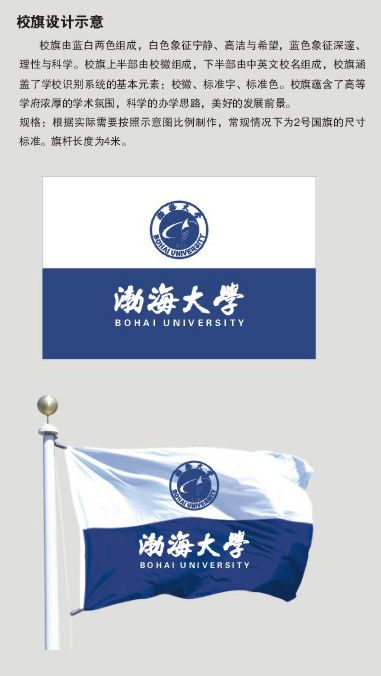
渤海大学始建于1950年2月，是辽宁省政府主办的综合性大学，位于渤海之滨的英雄城市、锦绣之州——辽宁省锦州市。学校为具有推荐优秀应届本科毕业生免试攻读硕士研究生资格和中国政府奖学金来华留学生及国际中文教师奖学金来华留学生培养资格院校。
学校占地2250余亩，总建筑面积60余万平方米。设有20个二级学院，53个本科招生专业，17个一级学科硕士学位授权点和18个硕士专业学位授权点，涵盖经、法、教、文、史、哲、理、工、农、管、艺等学科门类，现有全日制硕士研究生、本科在校生23000余人。
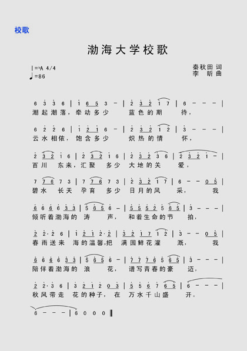
学校现有专任教师1300余人，其中教授200余人，博士630余人。获批“全国高校黄大年式教师团队”1个，有国家科技进步奖二等奖获得者、国家高层次人才特殊支持计划入选者、国家优秀青年科学基金项目获得者、“百千万人才工程”国家级人选、全国优秀教师、国务院政府特殊津贴获得者、教育部新世纪优秀人才支持计划入选者、辽宁省攀登学者、辽宁省特聘教授支持计划入选者，“兴辽英才计划”杰出人才、科技创新领军人才、教学名师、青年拔尖人才，辽宁省优秀专家、辽宁省高等学校优秀人才支持计划入选者、辽宁省院士后备人选培养工程人选、辽宁省“百千万人才工程”百层次入选者、千层次入选者，省级优秀科技人才、省级教学名师、省级专业带头人、省级优秀教师等近百人。
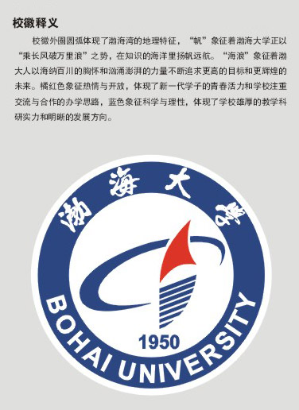
学校现有省一流学科A类建设项目1个、省一流特色学科项目3个、省重点学科培育项目7个。国家地方联合工程研究中心1个、农业农村部技术研发中心1个、国家民委中华民族共同体研究中心1个、教育部区域国别研究中心1个、国家级众创空间1个，辽宁省重点实验室、专业技术创新中心、工程研究中心、高校重点实验室、协同创新中心、重点新型智库、高等学校新型智库、科技创新智库研究基地、高校人文社会科学重点研究基地、经济社会发展研究基地、教育科学规划研究基地、科普基地、产业技术研究院、产业技术创新战略联盟、校企联盟、大学科技园等各类重要平台50余个。
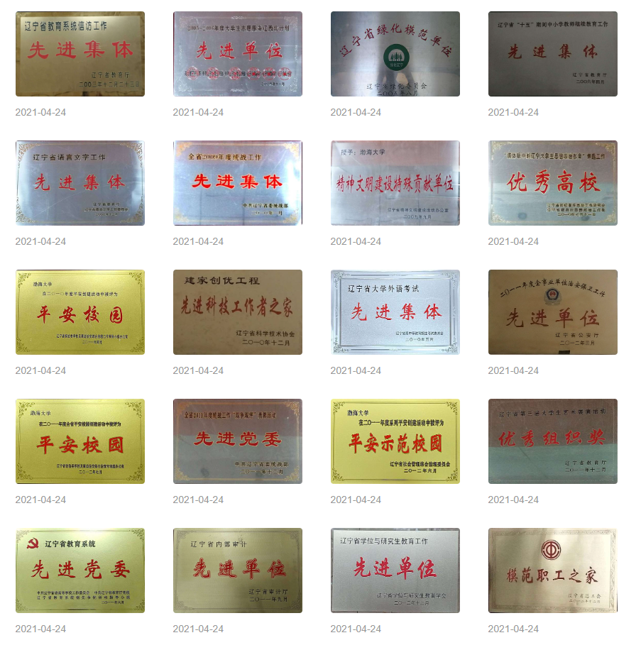
学校入选教育部一流本科专业建设“双万计划”24个，其中国家级一流专业建设点11个、省级一流专业建设点13个，国家级、省级特色（示范）专业、试点专业18个，9个师范专业通过教育部师范类专业二级认证。建设国家级、省级一流课程160门，国家级、省级精品教材24部，教育部产学合作项目、教改立项、省级教改项目700余项，获得国家级、省级优秀教学成果奖120项，居省内高校前列。有7个省级教学团队，8个省级实验教学示范中心，有国家级现代产业学院1个，省级现代产业学院4个。
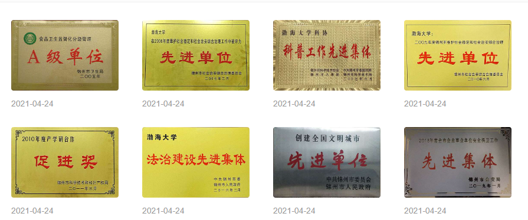
近五年，获批“十四五”国家重点研发计划项目1项、国家自然科学基金区域创新发展联合基金重点支持项目1项，国家自然科学基金、国家社科基金等国家级项目100余项，省部级纵向项目1200余项。获重大科研奖励42项，发表学术论文4370余篇，其中被SCI、EI、CPCI三大检索收录的论文2424篇，在《Science》《Nature》子刊上发表重要研究成果，3篇论文入选“中国百篇最具影响国际学术论文”。出版学术著作396部，获得发明专利授权290项，科技成果转化740余项。资政建议获副国级领导肯定性批示1篇，省部级领导批示或采纳66篇。
近五年，在校学生获得省级及以上创新创业竞赛奖项9200余项，其中国家级奖项600余项。中国国际大学生创新大赛获省级及以上奖项数216项，其中省级金奖32项、国家级奖9项。获批省级及以上大学生创新创业训练项目1136项，3项大学生创新创业训练项目，通过团中央、团省委2023年大学生创业帮扶计划项目审批，获创新创业经费支持。近年来毕业生初次就业去向落实率稳定在85%以上、高质量就业比例明显提升，曾荣获教育部“全国毕业生就业典型经验高校”、辽宁省“普通高校毕业生就业工作先进单位”称号。
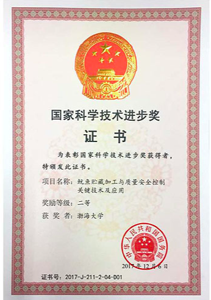
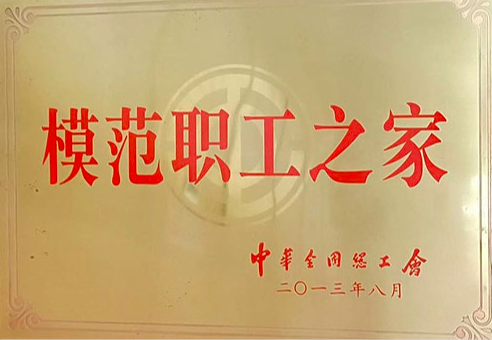
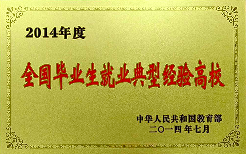
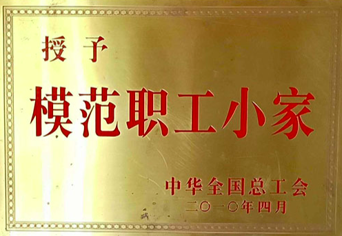
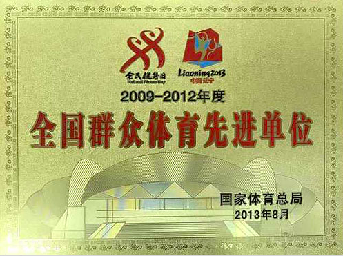
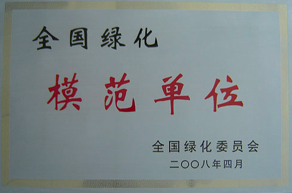
学校与30多个国家和地区高校建立合作关系，实施中外双导师联合培养研究生项目，与波兰华沙生命科学大学共建中外合作办学项目，布隆迪大学孔子学院获评“全球示范孔子学院”优秀通讯孔院，班吉大学孔子学院教师荣膺中非共和国总统学术棕榈勋章，累计培养来自近80个国家的留学生1000人次，为做优做强“留学中国”辽宁品牌贡献渤大力量。
学校基础设施完善，图书馆馆藏图书300余万册，仪器设备充分满足教学科研需要。校园环境优美，林木葱茏，获评2019年“辽宁最美校园”、荣获2021—2023年度“辽宁省文明校园”是全国绿化模范单位、辽宁省绿化模范单位、辽宁省校园绿化示范校和辽宁省安全文明校园、辽宁省生态文化教育示范基地。
党委书记：丛茂国
党委副书记、校长：赵建国
党委副书记：刘贺
党委常委、副校长：潘德昌
党委常委、纪委书记、辽宁省监委驻渤海大学监察专员：刘祚斌
党委常委、副校长：王权
党委常委、副校长：李学鹏
党委常委、副校长：王焕清
校长助理（挂职）：高坚